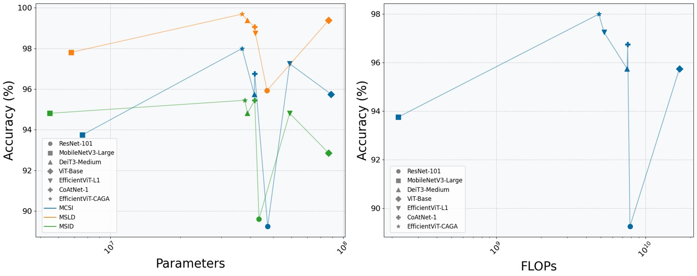
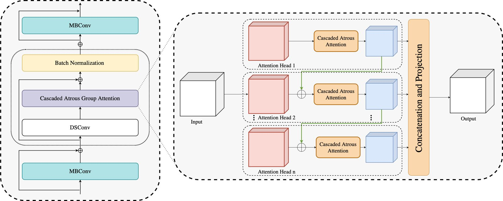
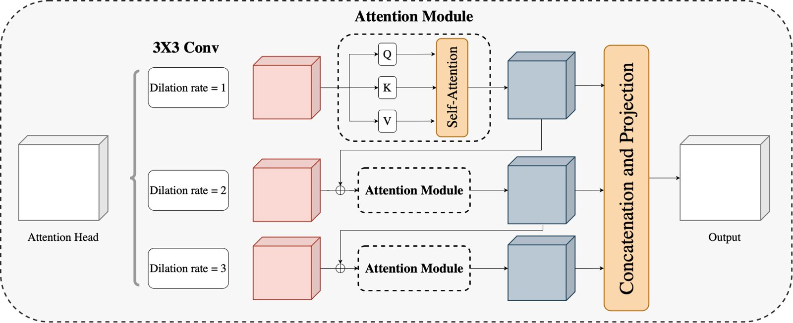
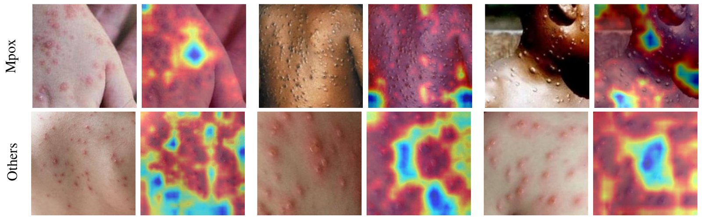

Cascaded Atrous Group Attention for Mpox
A Cascaded Dilated Convolution Approach for Mpox Lesion Classification · DAGM GCPR 2025
TL;DR I designed a small attention module (CAGA) and added it to EfficientViT-L1. The result classifies Mpox skin lesions at 98% accuracy on MCSI with 37.5% fewer parameters than the original backbone, and it is the most accurate model on all three datasets I tested.
The problem
Mpox lesions look a lot like chickenpox, measles and even acne, and lab tests are slow. Deep learning can help, but when I read the existing Mpox papers two things kept bothering me. Most were tested on a single dataset, and most compared attention models against a handful of CNNs. So I set two goals: a model that is accurate and small, and an evaluation that is actually fair, with three datasets, 10-fold cross-validation and strong CNN, ViT and hybrid baselines.

What I built

- Cascaded Atrous Attention (CAA). Each head runs dilated convolutions at rates 1, 2 and 3 and computes self-attention on each of them. The attention from one dilation is projected and added into the next, so small-scale detail builds up into wider context, like zooming out step by step.
- Cascaded Group Attention (CGA). Standard multi-head attention wastes compute because the heads end up learning the same thing. Here each head gets its own split of the channels and also receives the previous head's output.
- CAGA = CAA inside CGA, dropped into an EfficientViT-L1 backbone and trained with class-weighted focal loss.

Results
Accuracy on MCSI is the mean of 10-fold cross-validation. Parameters are for the MCSI model.
| Model | Params | MCSI acc. | MSLD acc. |
|---|---|---|---|
| ResNet-101 | 47.4M | 0.8925 ± 0.049 | 0.9593 |
| MobileNetV3-Large | 7.6M | 0.9375 ± 0.054 | 0.9781 |
| DeiT3-Medium | 41.5M | 0.9575 ± 0.033 | 0.9938 |
| ViT-Base | 88.7M | 0.9575 ± 0.035 | 0.9938 |
| CoAtNet-1 | 41.7M | 0.9675 ± 0.037 | 0.9906 |
| EfficientViT-L1 | 58.9M | 0.9725 ± 0.018 | 0.9875 |
| EfficientViT-CAGA (mine) | 36.8M | 0.9800 ± 0.023 | 0.9969 |
- Only 4.86 GFLOPs, which is 3.5× less than ViT-Base
- 37.5% fewer parameters than the EfficientViT-L1 it's built on, and better on every metric
- On MSLD it's the only model with 100% accuracy on the Mpox class
- On MSID its per-class accuracy is the most balanced (0.8% std, compared with 7.7% for CoAtNet-1), so it doesn't quietly overfit the easy classes
- Ablation: removing either the cascade inside CAA or the group attention costs accuracy. The full CAGA is best.
Full results on all three datasets
The complete tables from the paper (Tables I, II and IV). Bold is the best value in a column and underline the second best; for parameters the smallest counts as best.
MCSI mean over 10-fold cross-validation, ± std underneath
| Model | Params | Overall | Classwise accuracy | ||||||
|---|---|---|---|---|---|---|---|---|---|
| Accuracy | Precision | Recall | F1 | Mpox | Normal | Chickenpox | Acne | ||
| ResNet-101 | 47.4M | 0.8925± 0.049 | 0.8908± 0.056 | 0.891± 0.059 | 0.884± 0.060 | 0.8667± 0.116 | 0.8326± 0.131 | 0.8639± 0.126 | 1.0± 0.0 |
| MobileNetV3-Large | 7.6M | 0.9375± 0.054 | 0.9433± 0.052 | 0.9473± 0.050 | 0.9391± 0.053 | 0.9063± 0.122 | 0.9205± 0.130 | 0.9468± 0.093 | 1.0± 0.0 |
| DeiT3-Medium | 41.5M | 0.9575± 0.033 | 0.960± 0.031 | 0.958± 0.033 | 0.956± 0.035 | 0.9538± 0.065 | 0.9707± 0.064 | 0.9188± 0.120 | 1.0± 0.0 |
| ViT-Base | 88.7M | 0.9575± 0.035 | 0.9578± 0.033 | 0.9562± 0.036 | 0.9542± 0.036 | 0.9180± 0.081 | 0.9923± 0.024 | 0.9207± 0.118 | 1.0± 0.0 |
| EfficientViT-L1 | 58.9M | 0.9725± 0.018 | 0.9727± 0.017 | 0.9744± 0.020 | 0.9714± 0.019 | 0.9517± 0.066 | 0.9718± 0.062 | 0.9675± 0.0707 | 1.0± 0.0 |
| CoAtNet-1 | 41.7M | 0.9675± 0.037 | 0.971± 0.035 | 0.9671± 0.037 | 0.967± 0.037 | 0.9700± 0.051 | 0.9818± 0.057 | 0.9325± 0.101 | 1.0± 0.0 |
| EfficientViT-CAGA (mine) | 36.8M | 0.98± 0.0229 | 0.9789± 0.025 | 0.9795± 0.026 | 0.9781± 0.025 | 0.9690± 0.065 | 0.9789± 0.045 | 0.9675± 0.071 | 1.0± 0.0 |
MSID one 80/20 train–test split, so no ±
| Model | Params | Overall | Classwise accuracy | ||||||
|---|---|---|---|---|---|---|---|---|---|
| Accuracy | Precision | Recall | F1 | Chickenpox | Measles | Mpox | Normal | ||
| ResNet-101 | 43.5M | 0.8961 | 0.8633 | 0.8782 | 0.8686 | 0.762 | 0.8333 | 0.875 | 0.9831 |
| MobileNetV3-Large | 5.5M | 0.9481 | 0.94 | 0.927 | 0.9327 | 0.9047 | 0.9444 | 0.9107 | 1.0 |
| DeiT3-Medium | 38.8M | 0.9481 | 0.9159 | 0.9308 | 0.9229 | 0.8095 | 0.8889 | 0.9821 | 0.9831 |
| ViT-Base | 86.5M | 0.9286 | 0.9097 | 0.9154 | 0.9113 | 0.8571 | 0.8889 | 0.893 | 1.0 |
| EfficientViT-L1 | 58.9M | 0.9481 | 0.9082 | 0.9273 | 0.9165 | 0.761 | 0.8889 | 0.9821 | 1.0 |
| CoAtNet-1 | 41.7M | 0.9545 | 0.9201 | 0.9454 | 0.9317 | 0.8095 | 0.8889 | 0.9821 | 1.0 |
| EfficientViT-CAGA (mine) | 37.8M | 0.9545 | 0.9523 | 0.9376 | 0.9446 | 0.9524 | 0.9444 | 0.9464 | 0.9661 |
MSLD one evaluation, so no ±
| Model | Params | Overall | Classwise accuracy | ||||
|---|---|---|---|---|---|---|---|
| Accuracy | Precision | Recall | F1 | Mpox | Others | ||
| ResNet-101 | 47.1M | 0.9593 | 0.9592 | 0.9586 | 0.9589 | 0.956 | 0.960 |
| MobileNetV3-Large | 6.8M | 0.9781 | 0.9782 | 0.9776 | 0.9779 | 0.979 | 0.9974 |
| DeiT3-Medium | 38.8M | 0.9938 | 0.9937 | 0.9937 | 0.9937 | 0.993 | 0.994 |
| ViT-Base | 86.5M | 0.9938 | 0.993 | 0.994 | 0.994 | 0.986 | 1.0 |
| EfficientViT-L1 | 42M | 0.9875 | 0.987 | 0.988 | 0.987 | 0.979 | 0.994 |
| CoAtNet-1 | 41.7M | 0.9906 | 0.99 | 0.99 | 0.99 | 0.986 | 0.994 |
| EfficientViT-CAGA (mine) | 36.8M | 0.9969 | 0.997 | 0.997 | 0.997 | 1.0 | 0.994 |
Is it looking at the right thing?

How it started
This began as my research internship at the CANDLE Research Lab, IIT Roorkee, working with Prof. Sparsh Mittal. The first version used only cascaded group attention and got 97.5% on MCSI. I then extended it on my own, adding the dilated-convolution cascade inside each head, and that is what turned it into this single-author paper.
Abstract
The global outbreak of the Mpox virus, classified as a Public Health Emergency of International Concern (PHEIC) by the World Health Organization, presents significant diagnostic challenges due to its visual similarity to other skin lesion diseases. Traditional diagnostic methods for Mpox, which rely on clinical symptoms and laboratory tests, are slow and labor intensive. Deep learning-based approaches for skin lesion classification offer a promising alternative. However, developing a model that balances efficiency with accuracy is crucial to ensure reliable and timely diagnosis without compromising performance. This study introduces the Cascaded Atrous Group Attention (CAGA) module to address these challenges, combining the Cascaded Atrous Attention and the Cascaded Group Attention mechanisms. The Cascaded Atrous Attention module utilizes dilated convolutions and cascades the outputs to enhance multi-scale representation. This is integrated into the Cascaded Group Attention mechanism, which reduces redundancy in Multi-Head Self-Attention. By integrating the Cascaded Atrous Group Attention module with EfficientViT-L1 as the backbone architecture, this approach achieves state-of-the-art performance, reaching an accuracy of 98% on the Mpox Close Skin Image (MCSI) dataset while reducing model parameters by 37.5% compared to the original EfficientViT-L1. The model's robustness is demonstrated through extensive validation on two additional benchmark datasets, where it consistently outperforms existing approaches.
BibTeX
@inproceedings{deshmukh2025cascaded,
title = {A Cascaded Dilated Convolution Approach for Mpox Lesion
Classification},
author = {Deshmukh, Ayush},
booktitle = {DAGM German Conference on Pattern Recognition},
series = {Lecture Notes in Computer Science},
publisher = {Springer},
pages = {18--27},
year = {2025},
doi = {10.1007/978-3-032-12840-9_2}
}